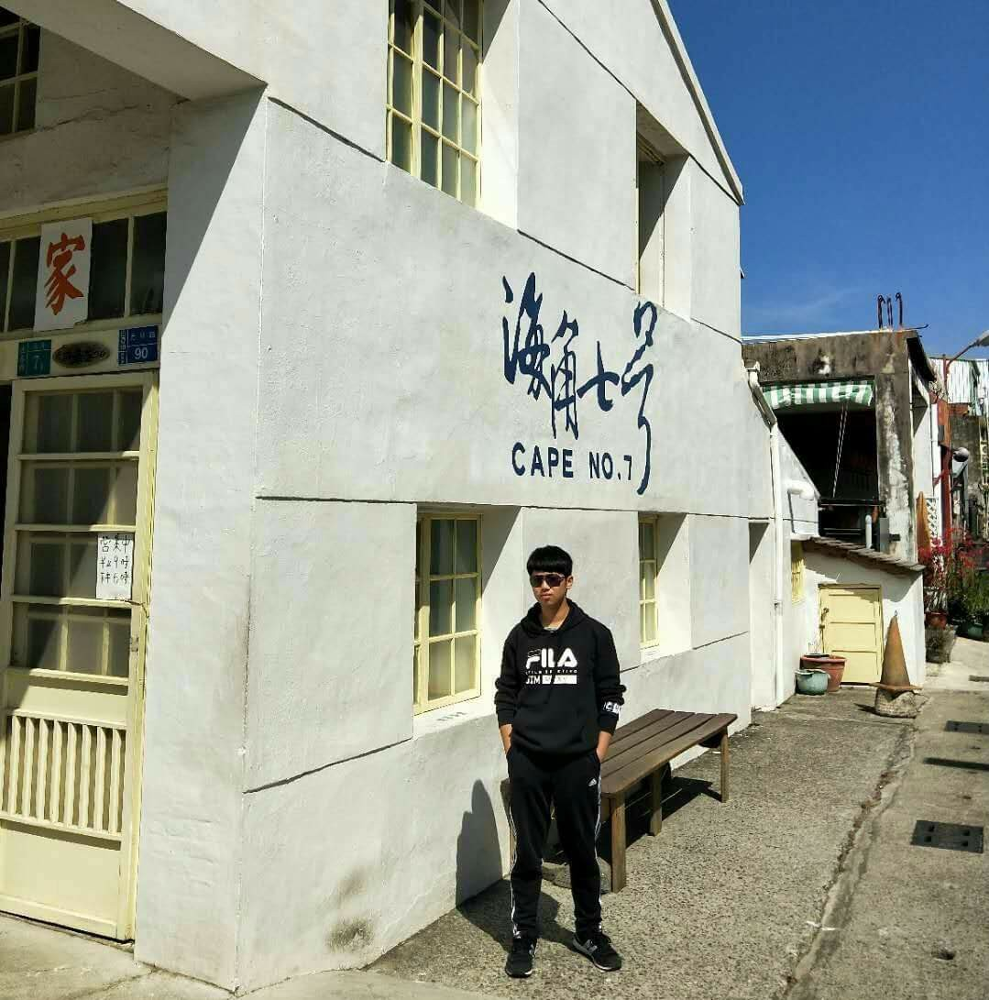
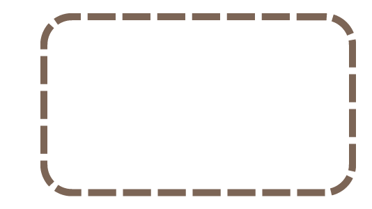
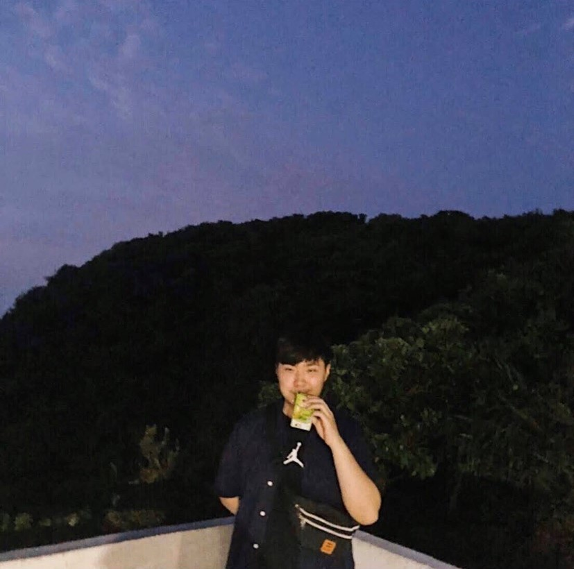

中原體育館


劉兆禹

第一次嘗試製作完整的網頁，原來有那麼多的細節需要去微調，平常四處亂逛的網站背後都有人辛苦的在做調整。我主要負責部分是影片的拍攝與剪輯，第一次做這種行銷取向的影片，覺得特別有挑戰，謝謝組員們的團隊合作，也很謝謝受訪者們的幫助。經歷過這次的實作，有對製作網頁的流程更加熟悉了！
這次的期中專案我主要是負責影片拍攝以及後續剪輯的部分，在這次的專案中，老師要求的影片長度是兩分鐘，在我剪輯的過程中，我發現就算時間再短的影片，在後續的處理也是要花費不少時間的。老師有提供非常多學長學姊的優秀作品讓我們參考，這讓我們有了大方向，希望我們這一組也能夠成為今年的優秀作品，好讓之後的學弟妹觀賞，除了影片的部分外，網站碼的撰寫上也讓我實際學到很多老師上課可能沒有補充到的地方，真的很感謝我的組員以及老師，謝謝。

林家禾
張仲庭
這次的期中專案讓我學習到團隊合作，我是從電子系轉到資管系的轉系生，在班上我完全不認識其他人，這也是我轉系後第一個期中專案，在組員裡面我是攝影，學習到了怎麼去找很好的背景去錄影跟拍照，希望下次我還可以挑戰更多不同的工作。